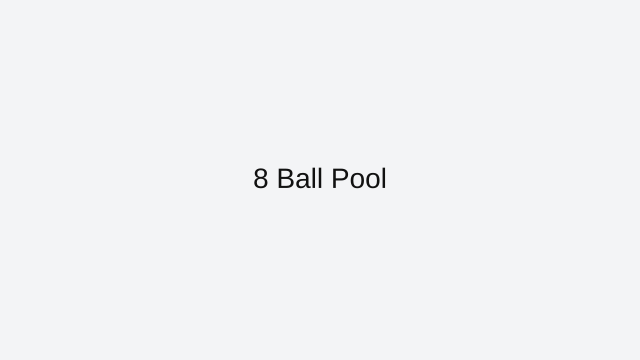

8 Ball Pool is a browser-friendly pool game on ArcadeZone that plays instantly in your web browser. This page explains the core rules, the best way to approach each session, and how to enjoy 8 Ball Pool without downloads or extra installs.
This browser version of 8 Ball Pool fits the category of sports games that are built for fast playing and repeat sessions. Sports games bring favorite athletics into the browser with intuitive controls and competitive action.
Controls are simple enough for quick games and satisfying enough for longer play. Use mouse drag and release or arrow controls to aim and hit the cue ball with precise force. You can play 8 Ball Pool on desktop or mobile, depending on the browser and the page version.
To improve in 8 Ball Pool, focus on the most important idea for the genre: pool games often reward good timing, pattern recognition, and steady progress. This page also includes practical tips that help you find the right pace and avoid common mistakes while playing. If you enjoy pool games, try Basketball Stars, Soccer Random, and Baseball Pro next. All of these are listed on the ArcadeZone All Games page for quick access.
ArcadeZone keeps this 8 Ball Pool page clean and easy to use, with a strong focus on playability and helpful guidance. Bookmark this page if you want faster access to 8 Ball Pool and other browser classics from the ArcadeZone collection.
8 Ball Pool is featured here because it offers a polished browser experience with fast loading and easy access from any modern device.
This page also covers what makes 8 Ball Pool work well online and how to get the most out of every session.
When you want a quick game break, 8 Ball Pool delivers simple play mechanics and satisfying goals without distractions.
What you'll love
Instant browser access with no downloads or installations required.
Play competitive sports challenges that fit well in quick browser sessions.
A clean, mobile-ready page helps you learn the controls and start playing immediately.
Game essentials
Category: Sports
Game type: Pool
Best for: competitive sports mini-games
Controls: use your keyboard, mouse, or touchscreen to play

Screenshot: 8 Ball Pool
How to play
Aim carefully, then click or tap to hit the cue ball and sink the target balls with steady control.
Tips & Tricks
Master the timing for shots, passes, or swings to stay in control of the play.
Keep an eye on the entire field so you can react to opponent movement quickly.
Use the game’s practice mode or warm-up to get a feel for the controls before competing.
Play
If the game embeds elsewhere, link to the source or use an embed iframe with proper attribution.
ArcadeZone provides this page as a guide to 8 Ball Pool. Wherever possible, we link directly to the game’s browser-ready version and credit the original creators. If you want more browser game recommendations, visit the All Games page.